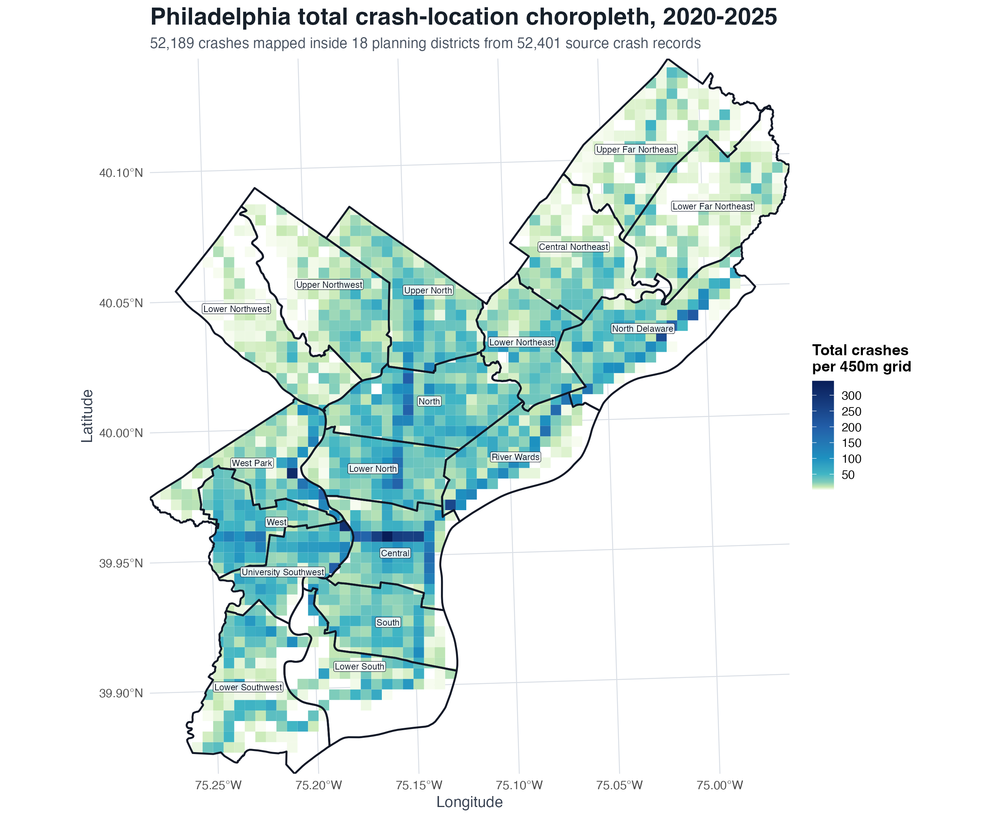
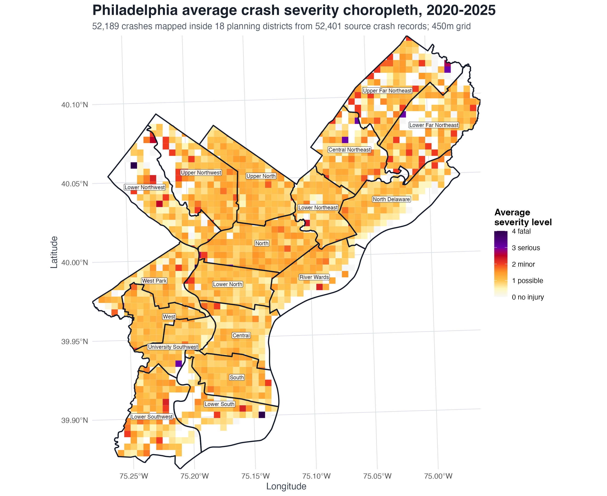
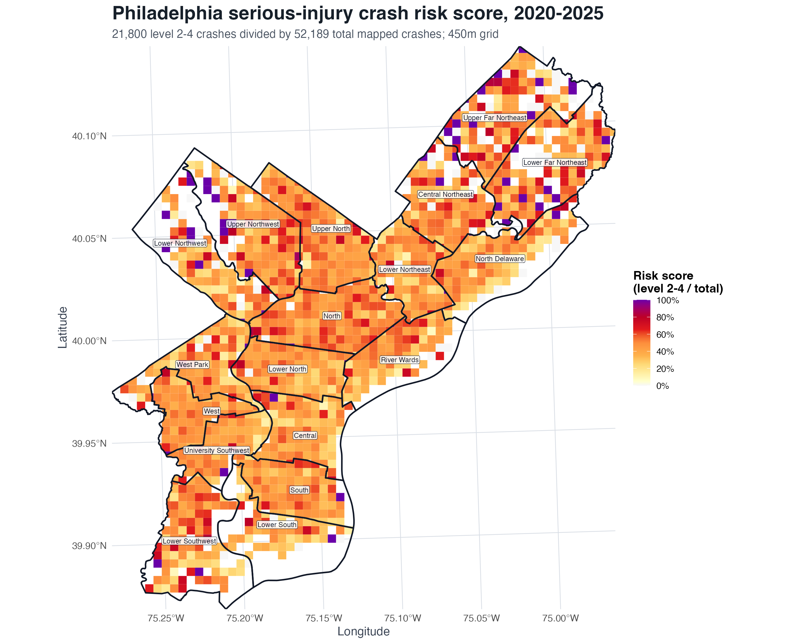

Which factors are most significantly correlated with evident injuries in a crash?
Severity is organized with the KABCO scale: 0 no injury, 1 possible injury, 2 minor injury, 3 serious injury, and 4 fatal injury.
WHARTON GLOBAL YOUTH PROGRAM · DATA SCIENCE ACADEMY
A six-year Philadelphia study that turns 52,189 mapped collisions into visual evidence about where crashes happen, how severe they are, and what cities can do next.
Explore the findingsTHE PROJECT
The project combines collision records, spatial grouping, and severity modeling to make a large urban safety problem easier to inspect. The visual story keeps frequency and consequence separate so that a quieter district is not automatically treated as a safer one.
Severity is organized with the KABCO scale: 0 no injury, 1 possible injury, 2 minor injury, 3 serious injury, and 4 fatal injury.
Maps and models translate individual collision records into district-level patterns that can be compared across the city.
PROJECT WALKTHROUGH
The video gives the analysis a physical sense of place: collision locations, concentration, and severity become a citywide pattern rather than a spreadsheet of isolated rows.
VISUAL RESULTS
Each map answers a different question. Read them together: where collisions accumulate, where average outcomes become more severe, and where serious-injury risk is concentrated relative to the local crash total.



READ 01
The frequency map highlights corridors and intersections that deserve attention because many collision events occur there.
READ 02
The severity map adds injury consequence. Lower volume does not automatically mean lower harm.
READ 03
The risk score shows the share of serious-injury crashes inside each grid, making frequency and severity comparable.
DISTRICT STORIES
The maps become more useful when paired with the street geometry, traffic context, and sample-size limits described in the project.
Roosevelt Boulevard (US-1), Bustleton Avenue, and Cottman Avenue create a wide, multi-lane setting with higher operating speeds and long crossing distances. The project also flags the very small sample size here, so the severity pattern needs cautious interpretation.
Rail corridors and the Wissahickon side hills shape where streets and pedestrians can cross. Lincoln Drive, Wissahickon Avenue, and Allens Lane show why roadway context matters alongside a map value.
Broad Street is a major north-south arterial, while Olney Transportation Center links transit and employment. A district view helps connect corridor scale to the people moving through it.
These are data-informed interpretations from the project, not causal claims about a road or neighborhood. Frequency, severity, exposure, and missing variables should be considered together before intervention.
FROM MODEL TO ACTION
The project translates the visual patterns into practical directions for government and community partners.
Give each district a readable report with bike, truck, car, and pedestrian safety hazards.
In high-collision districts, inspect the roadway and traffic-control factors that the severity model identifies for closer attention.
Use crash timing as evidence when considering a “no truck period” or “no bike period” for a specific corridor or time window.
HOW IT WAS BUILT
The analysis uses logistic regression with LASSO, relaxed LASSO, backward elimination, and a final model to examine collision severity. Categorical regressions and spatial aggregation help compare the 18 planning districts.
Grid averaging. Averaging severities within a grid can hide variation between individual crashes.
Imbalanced outcomes. Fatal and severe crashes represent a small share of the records, so rare outcomes require care.
Incomplete variables. Missing or limited fields can constrain what the model can explain.
PRESENTATION & EVIDENCE
The project was built to be communicated: maps make the spatial pattern legible, the video makes the collision story immediate, and the full report keeps the assumptions and methods available for review.
Read the full project PDFWharton Data Science Academy
Data-driven modeling, visualization, and communication in a real urban safety case.